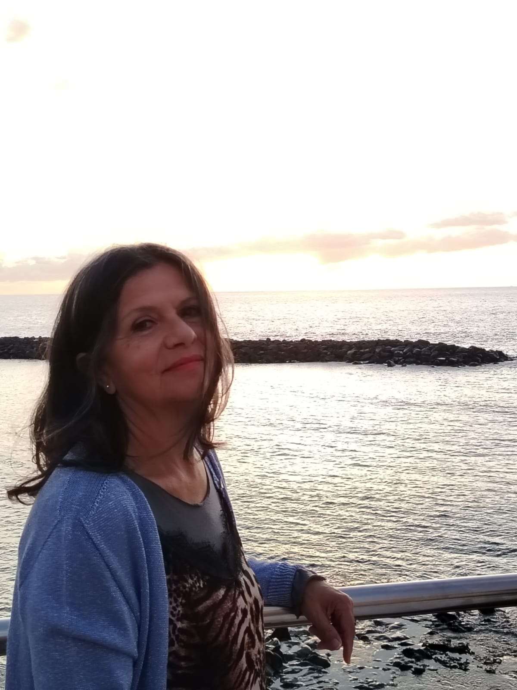

Paola Spremulli
Paola Spremulli è una poetessa italiana che attraverso i suoi versi esplora la bellezza nascosta nel quotidiano, nei paesaggi e nelle emozioni che ci attraversano.
La sua poesia nasce dall'osservazione attenta della natura e dalla capacità di cogliere l'incanto negli attimi fuggevoli, trasformandoli in parole che restano.
I temi ricorrenti nelle sue opere spaziano dalla contemplazione del mare e dei paesaggi mediterranei, all'introspezione e alla ricerca di significato nella bellezza del mondo.